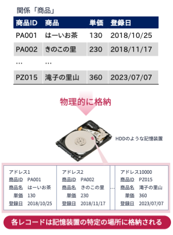
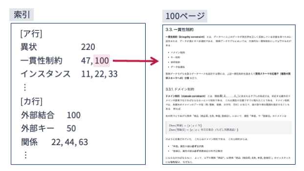
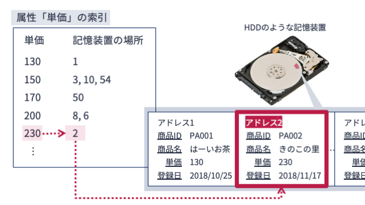
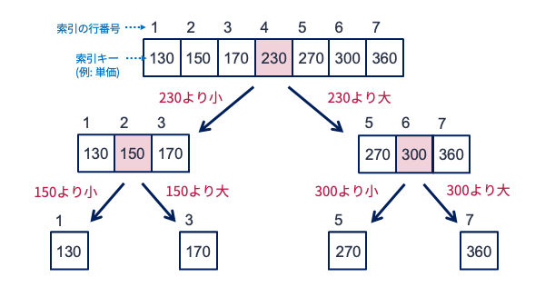
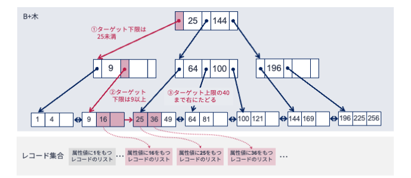

14. B+木 & ハッシュ索引#
第11講と第12講で説明した正規化理論によって，データの正しさを担保する関係データベースを設計することができる． しかし，データのの正しさを保証してくれるからといって，問い合わせに対する待ち時間が長いようでは，データベースとしての利便性は低い． 利便性が高いデータベースには，データの管理のしやすさに加え，データの処理速度も求められる．
問い合わせにデータベースの応答速度（クエリ実行時間）を改善する方法としては，クエリ最適化（query optimization）や索引の利用が考えられる． 本章では索引づけに焦点を当て，データベースの応答速度を改善する手法について述べる．
14.1. 関係データの物理的な格納方法#
計算機ではあらゆるデータはゼロイチの2進数で表現され，主記憶装置（メモリ）やハードディスクやSSDのような補助記憶装置のどこかに物理的に格納される． 関係データベースにおいてもそれは同じである． 関係データベースではすべてのデータは表形式で表現されるが，実際に補助記憶装置にデータを格納する際には，表はタプル（レコード）をひとまとまりの単位として分割され，記憶装置のどこかに格納される．
Note
表データをタプル（レコード）単位で分割し格納するデータベースは行指向データベース（row-oriented database） と呼ばれる． それに対して，属性（列）単位で分割・格納するデータベースは列指向データベース（column-oriented database） と呼ばれる．
関係データベースのようにレコードの追加や削除を頻繁に行うことが想定されるデータベースにおいては，行指向でデータを格納するほうが効率的である． 一方，データの更新が頻繁でなく，属性（列）単位の集約演算を頻繁に行うような場合は，列指向データベースの方が効率的である．
以下は，関係「商品」を（物理的な）記憶媒体に格納した際のイメージ図である． 図のように，「商品」の各レコードは記憶装置の特定の場所にばらばらに格納されている． SQL文による問い合わせがあった場合は，関係データベースシステムは条件に合致するレコードが記憶装置のどこに保存されているかを調べて引っ張ってくることになる．

14.2. 索引#
データベースから条件に合致するレコードを探す方法として，該当するテーブルのレコードが格納されている場所を先頭から1つ1つ調べ上げる方法が考えられる． この方法では，レコードの数がN件ある場合，N回確認作業が必要となる． 確認回数が多くなると，問い合わせへの応答時間が長くなる． レコードの数が少ない，つまりNが小さい場合は問題とならないかもしれないが， 関係データベースが対象とするデータ（レコード）の数は膨大である． いかに計算機とはいえ，数百万，数千万のレコード数を逐次的にチェックするにはそれなりに時間がかかる．
索引は，レコードの探索時間を改善したいときに有効な方法の1つである． 一般的な意味で用いられる索引とは，特定の項目がどのページに掲載されているかをまとめ，項目順に並べたものである． 索引は書籍の末尾に掲載されていることが多い． 下図のように索引を調べることで，全ページを見返さなくても自分が知りたい項目がどこのページに掲載されているかをカンタンに知ることができる．

データベースにおける索引も書籍のそれと類似した役割をもつ． データベースにおける索引（インデックス; index） とは，データベース中のある属性に注目し，ある属性値を持つレコードを効率よく取得できるよう工夫された特殊なデータを意味する． 索引は
索引キー（index key） と呼ばれる検索対象となる値，および
その値をもつレコードの場所を特定する情報
から構成される．
下図は関係「商品」の属性「単価」に関する索引とそれを利用した問い合わせのイメージである．
「単価」の索引には，単価の値（索引キー）とその値をもつレコードが格納された場所のペアが記載されている．
例えば，単価の値が230のレコードを検索したい場合は，索引を上から調べ，値が230となるレコードがあることが分かれれば，それが格納された記憶装置の場所を調べに行くことで所望のレコードの情報を得ることができる．

書籍における索引がそれのためにページが割かれるように，データベースの索引もそれ自体を作成するのに記憶装置の場所（空間）を消費する． 索引は空間効率を犠牲にして時間効率を向上させる方法である． 空間効率の劣化を抑えつつ時間効率を向上させるために，様々な種類の索引が提案されている．
14.3. 二分探索#
例えば，格納されたレコード数が10万の表に対して，ある属性に関する索引を構築したとしよう． 索引のサイズ（行数のようなもの）が5分の1になった場合，索引の先頭から索引キーの値を調べていったとしても，合計2万回も確認が必要となる（いわゆる線形探索）． 索引を使えば，特定の条件を満たすレコードが探しやすくなる —— 直感的にはその通りなのだが，巨大な索引リストの中からある条件に合致する箇所を探そうとすると，効率の良い方法が必要となる．
索引キーがソートされている場合，索引へのアクセス効率を劇的に向上させる方法の1つが二分探索である． 二分探索（binary search） は，ソート済みの配列から指定した値を高速に探索するアルゴリズムである． 二分探索アルゴリズムの概要は以下の通りである：
配列のちょうど真ん中の位置の値をチェックする．チェックした値が探している値であった場合はそこで終了
チェックした値が探している値よりも
「小さかった」場合，配列の「右半分」を新たな検索対象配列とする
「大きかった」場合，配列の「左半分」を新たな検索対象配列とする
値が見つかるまで，ステップ1-2を繰り返す．配列の長さが1になっても見つからなかったら，探している値は配列にはなかったことになる
以下の図を使って，二分探索の振る舞いを確認してみよう． 図の一番上には，ソートされた索引キーの配列が並んでいる． 配列の位置は索引における行番号と考えてほしい． 今，270という値（をもつレコード）の場所がどこかを知りたいとしよう． 配列の先頭から愚直に調べると，270の値が入った場所を調べるには5回の確認作業が必要となる． 一方，二分探索を適用すると，以下のような手順で値の場所が見つかる．
まず配列の真ん中である4番目にアクセスし値を見る（値=230）
所望の値である270は230より大きいので，右半分の配列の真ん中の位置（6番目）にアクセスする（値=300）
所望の値である270は300より小さいので，先ほど確認した配列の左半分の真ん中（5番目しかない）にアクセスする
値が270であったので，位置情報として5を返す（終了して，索引の5行目に記されている記憶装置の場所にあるレコードを調べに行く）

270の値を見つけるのに要した配列へのアクセス回数は合計3回である． 二分探索では，1ステップごとに調査対象となる配列のサイズが半分になっている． そのため，もとの配列のサイズが\(N\)のとき，所望の値を見つけるために必要となる配列へのアクセス回数は最悪のケースでも\(log(N)\)となる． 先の例題では配列のサイズが小さいため二分探索の効果が感じにくかったかもしれないが， 例えば索引のサイズ（索引キーの種類数）が100万の場合，二分探索を使えば索引キーの配列に20回程度アクセスするだけで所望の値を見つけることができる．
14.4. B+木#
二分探索はソート済み配列を探索する上で強力な方法であるが，データベースの索引キーを探索するには，以下のような欠点がある．
データベースが超巨大になると索引のサイズも超巨大になるため，さすがの二分探索も少し遅くなる
属性値がある範囲の値をもつレコードを探索したいというケースにおいて，単一の値の検索に特化した二分探索は分が悪い
データベースではレコードの追加や更新が頻繁に発生するため，データベースの更新ごとに巨大な索引キーをソートするのは効率が悪い（クイックソートを使うと\(O(n \log n)\)の計算時間がかかる）
B+木（B+ tree）[1] は，二分探索よりも高速かつ効率よくデータの探索を行い，かつ更新にかかるコストも小さい，索引用のデータ構造である． B+木は以下のような特徴を持つ木構造式データである．
根ノードから葉ノードへのパスの長さはすべて同じである
葉ノードは索引キーの（順序付き）集合で構成される．各葉ノードは索引キーを収容するスペースをもつ．そのスペースには最小\(\frac{2m+1}{2}\)個，最大\(2m+1\)個の索引キーを収容できる（\(m\)の値は事前に決めておく）．なお，葉ノード中の索引キーは昇順にソートされている
隣接する葉ノードはリンクで結ばれている（すぐ隣の索引キーが何か分かる）
葉ノード以外のノードは，ポインタと探索キーを交互に持つ．なお，ノードに収容できるポインタの数は最大で\(2m+1\)個，探索キーは最大\(2m\)個である．探索キー\(k\)の左隣のポインタは値が\(k\)未満の探索キーを含む子ノードにリンクしている．探索キー\(k\)の右隣のポインタは値が\(k\)以上の探索キーを含む子ノードにリンクしている
根ノードは1個以上の探索キーを持つ
根ノード，葉ノード以外の中間ノードは\(m\)個以上の探索キーを持つ
葉ノードの各索引キーはその値を属性値としてもつレコード集合とリンクしている
上の定義だけでは分かりづらいので，図を見ながらB+木の特徴を確認しよう． 以下の図はある属性の索引キー（属性値）として
1, 4, 9, 16, 25, 36, 49, 64, 81, 100, 121, 144,169, 196, 225, 256
のいずれかを取るレコードに対するB+木である． このB+木は\(m=1\)である．
図を見たら分かるように，すべての索引キーはいずれかの葉ノードに格納されている（特徴2）． 索引キーが格納されたどの葉ノードについても，根ノードから2回枝をたどるだけで到達できる（特徴1）． また，根以外のどのノードも半数以上スペースが埋まっている（特徴2および4）． さらに，ある索引キーの次に小さい（大きい）索引キーは同じ葉ノード内で，もしくは隣の葉ノードに隣接している（特徴3）． 例えば，索引キーの4の次に大きい索引キーを知りたければ，4が含まれる一番左の葉ノードから右隣にリンクされている葉ノードを見ることで，9が次に大きい索引キーであることが分かる．

B+木で重要なことは，どの葉ノードも根ノードからの距離が同じであることである． これによって，どの索引キーも同じ計算時間で見つけることができる． 一方，どのノードも常に半数以上スペースが埋まっているという特徴は，裏を返せば半分は空いていてもよいということになる． これは索引に割り当てる記憶領域が無駄になっていることを意味するが，空きがあれば木の構造を大きく変えずに新たな索引キーが挿入できるため，索引更新に柔軟性を持たせる工夫とも言える． このようなB+木を索引に使うことで，ある条件にマッチするレコードを高速に探索することができる． また，レコードが追加・更新・修正されても，コストを抑えて索引を更新することができる．
以下では，B+木を用いたレコードの探索方法について見てみよう．
14.4.1. B+木による値の探索#
ある属性値をもつレコードの探索は，ノードに含まれる探索キーをチェックしながらB+木の根ノードから葉ノードまでたどることで行う． 例えば，ある属性\(A\)の値として，
1, 4, 9, 16, 25, 36, 49, 64, 81, 100, 121, 144,169, 196, 225, 256
のいずれかを取るレコードが格納された関係表に対して，B+木による索引を構築したとしよう．
そのB+木は先の図となる．
このB+木を使って，属性\(A\)の値が121となるレコードを探すことを考えよう．
手順は以下の通りとなる（図も参照すること）．

まず，根ノードにアクセスし格納された探索キーを調べる．
探索キーは25と144である．
ターゲットとなる値は121であり，25よりも大きく144よりも小さい．
よって，探索キー25と144の間にあるポインタをたどる．
ポインタをたどった先にあるノードには，探索キーとして64と100が格納されている．
先ほどと同様，ターゲットとなる値と探索キーの関係を調べると，ターゲット値である121は100より大きい．
よって，探索キー100の右隣にあるポインタをたどる．
その結果，葉ノードにたどり着く．
葉ノードに格納された索引キーを左から探索すると，一番左端にターゲット値である索引キー121が見つかる．
所望の索引キーが見つかったので，そこからリンクされたレコードを取得する．
これにて探索完了である．
B+木の特徴6に記した条件により，B+木ではどの中間ノードも子ノードの数は\(m+1\)個以上となることが保証されている． これにより，索引キーの数が\(N\)この場合，B+木の根ノードから葉ノードへのパスの長さは\(log_m(N)\)となる． 各ノードに含まれる探索キーの数は高々\(2m\)個である． 各ノードを探索キーを線形に一通りチェックしたあとパスをたどるとしても，探索完了までにかかる計算量は\(m\)が\(N\)よりも十分小さいことも考慮すると，
\(O(2m log_m N) = O(log_m N )\)
となる． 二分探索を用いた場合の計算量は\(O(log_2 N)\)であるため，\(m\)を2より大きく取ればB+木は二分探索よりも高速に値を探索することができる．
14.4.2. 範囲探索#
B+木を使えば，範囲探索も容易に行える．
先ほどの例で使ったB+木を使って，属性値がある範囲にあるレコードを探索する手順を示そう．
今，属性値が10以上40未満であるレコードをすべて取得したいとしよう．
手順は以下の通りである（図も参照すること）．

探索条件の下限である10に着目する．
根ノードにアクセスし格納された探索キーを調べる．
探索キーは25と144である．
ターゲットとなる値は10であり，25よりも小さい．
よって，探索キー25の左にあるポインタをたどる．
ポインタをたどった先にあるノードには，探索キーとして9が格納されている．
ターゲット値は10であるため，探索キー9の右隣にあるポインタをたどる．
その結果，葉ノードにたどり着く．
葉ノードに格納された索引キーを左から探索すると，左から2番目にターゲット値である10より大きい索引キー16が見つかる．
ところで，ターゲットとなる属性値の上限は40であった．
そこで，先ほど見つけた索引キー16から右側にリンクをたどりながら索引キーが40未満のものをすべて拾い上げていく．
すると，索引キーとして16，25，36が見つかる．
条件を満たす
所望の索引キーがすべて見つかったので，各索引キーからリンクされたレコードを取得する．
これにて範囲探索完了である．
14.4.3. B+木の構築・更新#
すでに述べたように，データベースではレコードの追加や更新が度々行われる． そのため，データベースの更新に応じて索引の更新も必要となる．
B+木は根ノードから葉ノードへのパスの長さが均一になるよう（木の高さのバランスを崩さない）よう，索引を更新するアルゴリズムが提案されている． 直感的には，
新たな索引キーを挿入する場合には，木の構造を崩して木を上に向かって伸ばす
索引キーを削除する場合には，キーの挿入操作の逆を行う
といった戦略でB+木を更新する． B+木の更新アルゴリズムの詳細については「IT Text データベースの基礎」「データベースシステム（改訂2版）」「リレーショナルデータベース入門（第3版）」などの書籍を参照されたい．
14.5. ハッシュ索引#
後日執筆
14.6. SQLによる索引の構築#
大抵の関係データベース管理システムでは，以下のようなSQL文でテーブルの特定の属性に対して索引を構築することができる（「インデックスを張る」ともいう）．
CREATE INDEX インデックス名
ON テーブル名 (索引の対象となる属性名)
USING 索引種別;
例えばproductテーブルの属性priceに関してB+木を使った索引を構築したい場合は，以下のようなSQL文を使う．
CREATE INDEX product_price_idx
ON product (price)
USING btree;
一般に，主キーや外部キーとして指定された属性には自動的に索引が構築されるが，それ以外の属性に索引を構築したい場合は上記のようなSQL文を発行する必要がある． 問い合わせに対する応答速度が遅い場合，索引の構築は非常に効果的である． 一方，索引は記憶領域を余分に消費するので，無闇に索引を構築するのは避けるべきである．